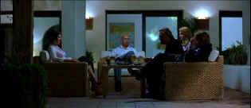

| Sexy Beast/ B+, A- |
| Fox/2001/89/ANA 2.35 |
Sexy Beast may start out with a hip, rye tone, but
you best prepare yourself for some extreme violence. It's not gratuitous
violence, but it's shocking, in your face, and stomach-knotting. In
contrast to the languid, oily, hot, opening, when Sexy Beast explodes
the result is endless reverberations in the blue water of the tempting
swimming pool. The film goes so far to catch you unawares that it almost
starts out like a slightly skewed commercial for a tourist paradise.
 |
|
The guest from Hell. ©Fox
|
Gal Dove is living the British gangster dream
of retirement on the sunny coast of Spain with his wife Deedee. Buddy in
crime Aitch and his paramour Jackie are their constant poolside
companions. That's the sunny part. But a cloud is coming. Former cohort in
crime Don Logan wants Gal for one more job. He's coming for a nice social
visit to iron out the details. Gal is determined not to go back to the old
life. Don wants his way. The character collision is one you will
remember forever. Don doesn't take "no" for an answer lightly.
Don Logan is a walking stick of nitro.
There's something about Sexy Beast that
merges old style gangster films with modern filmmaking sensibilities. It's
a great match. Rapid fire dialogue ricochets around like sprayed bullets
from a machine gun. The lean script by Louis Mellis and David Scinto is
embellished by fine production elements. The nightmare sequences have a
surreal flare. They are out there, on the edge, like much of this fine
film. The assortment of formidably dangerous characters play out a rough
and nasty nightmare. Director Jonathan Glazer keeps Sexy Beast
moving at a gallop. It's intense direction driven by first-rate editing.
Scenes intercut with only small doses of violence accentuate the
impact. Cool production design and slick photography make Sexy Beast
come to sweaty life. The music drives the plot well with a cocky beat.
Ben Kingsley is amazing as Don Logan. He charges
into the scene like a gored bull thrusting horns in every direction. I
have never seen anything close to this from Kingsley. He must have loved
doing this part. It almost makes you want to smile, but you soon
forget that. Ray Winstone's Gal may not be as flashy a performance as
Kingsley's Logan, but it's every bit as good. Winstone has a wonderful
screen presence. You should look forward to catching him in Fred
Schepisi's very fine flick Last Orders which should hit DVD in the
third quarter. Teddy Bass is the third dangerous character. Ian McShane's
heavy-lidded, lined face, with slicked black hair and ice cold blue eyes
is a riveting presence. Teddy means business.
Overall very good color saturation. Wonderful blue
skies. Excellent detail. Fleshtones are natural. Subtle details are
easily discerned. Check out the range of brunette highlights in Deedee's
hair. Black levels are outstanding with fine shadow balance. Night
lighting is simply gorgeous. The patio scenes are sparkling with
illumination from the pool glowing seductively. Light output is powerful.
You practically have to squint in the sunlight. The combination of speedy
dialogue delivery and the heavy cockney accents make it difficult to
follow at times. The early going was tough for me and I resorted to
turning on the subtitles to follow the rapid fire delivery. Good bass beat
delivered in tight rhythms on the Dolby Digital 5:1 surround. .
Bonus features on this Sexy Beast special
edition include audio commentary by Ben Kingsley and producer Jeremy
Thomas. There's also a featurette.
|
|
|
|

Selections from the Feature
Archive include articles on Akira Kurosawa, Frank Darabont, Blonde Bimbos, Hollywood Street Gangs, or Vietnam: The Hollywood Pariah, and many
more....
Film noir: The phrase hangs awkwardly on the tongue,
shadowy images peek out from behind half-closed doors. Click on the Noir and Noir Again symbol for a look into the
dark spaces of Hollywood's revisiting of film noir

The Movie Poster Archive
includes extensive poster images from the films of stars like Susan
Hayward, Kirk Douglas, Katharine Hepburn and many more. Our featured
star is Richard Widmark.
 
Manufacturer of computer-video interfaces, switchers, distribution
amplifiers, computer-video scan converters, and high resolution cable.
Found in many high end home theater systems.
Werner Herzog Film
![[ Werner Herzog ]](../images/werner-herzog.jpg)
The Web site of director Werner Herzog includes lots of great material. A
perfect stop for anyone who admires his films.

ISF Monitor
Calibrations in the Tristate New York area. Lots of hardware
info and frequent hardware peaks from video expert Kevin Miller. They may
be judgmental, but that's the point, isn't it. Lots of DVD reviews plus
news and more.
 Have you visited
Home Theater
Talk lately? One of the friendliest places on the Net for Home
Theater and DVD discussion, you can get help for installation problems or
simply share your opinions with other Vidiots Have you visited
Home Theater
Talk lately? One of the friendliest places on the Net for Home
Theater and DVD discussion, you can get help for installation problems or
simply share your opinions with other Vidiots
.
Mystery writer Fred Hunter digs into classic films on DVD. Check out his
insightful reviews at The Classics on DVD. |